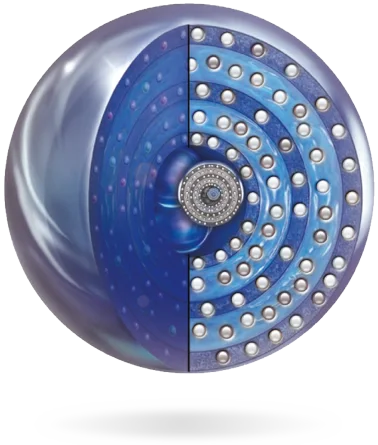

MVE
ТЕХНОЛОГІЯ
УНІКАЛЬНА MULTIVESICULAR EMULSION
TECHNOLOGY - ТЕХНОЛОГІЯ
МУЛЬТИВЕЗИКУЛЬРНИХ ЕМУЛЬСІЙ
ЗАПАТЕНТОВАНА ТЕХНОЛОГІЯ ПОСТУПОВОГО
ВИВІЛЬНЕННЯ АКТИВНИХ ІНГРЕДІЄНТІВ.
Вона допомагає створювати везикули у вигляді
концентрованих кіл водної та ліпідної фази,
що містять розчинні активні інгредієнти
6/13